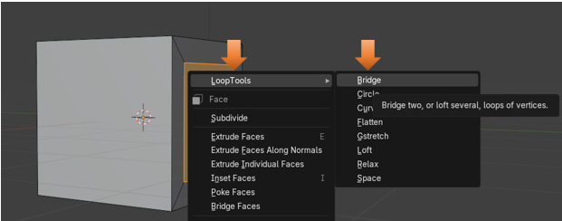

~2 Bridge~
7/7/2025
How do you use the Bridge Tool?
The Options for the Bridge Tool
What is the Bridge Tool?
The Bridge Tool is the first gadget that you will come to in the option list, when you open the Loop Tools.
This Tool is used to connect multiple edge loops or face groups. It can also be used to cut a hole in your 3D models.
Of course, as we had explained in our Last tutorial on Introduction to Loop Tools, we first need to turn the set of Loop Tools on in Blender before we can use them. So, next I will provide an overview of that very important initial step.
How to Turn on Loop Tools
You will want to go to:
Edit-Preferences- Add-ons then just enable Loop Tools.
Now you can reach the Loop tools by right clicking on the object in Edit mode. It should be the first listed item in the context menu that pops up, it then has a submenu for tool options.
Joining Two Objects Together
If you are following along from our last article, on the Introduction to these tools; you will remember that if we bring in two separate objects, in Object mode, that they will first need to be joined together before we can bring them into Edit mode, and use our loop tools on them.
So, let’s start off with those two cylinders that we used as an example in our previous tutorial.
Now select these two cylinders and hit ctrl-J to join them together. Remember once they are joined that both of our outlines around both of them will be orange.
How do you use the Bridge Tool?
Once in Edit mode, we want to change to Edge selection mode
Now alt-click to select on a single edge, at the end of a cylinder to select the entire loop, and then use shift -alt left mouse button on the second object, to grab the second edge loop encircling its base.
Now right click to be able to get to the menu where you can choose Bridge for your Loop Tool.
The Bridge will attach the two sections like this. Not exactly perfect, but you will have a connection.
The Options for the Bridge Tool
To make that connection look a bit better, go to the bottom left of the screen to access the options setting for this tool. Remember reaching this dialog box must be your next step. If you try to do anything else after the initial bridging of the item, this box will disappear.
We want to increase the Segments in this dialog box to where the connection looks good.
If you increase the Strength setting here, it will make this bend more pronounced.
You can add a Twist to this, not that you would really want to in this case.
Or by hitting that Reverse checkbox this Twist can be reversed, to go in the opposite direction.

Cutting a Hole
We can also use this tool to cut a hole in the mesh.
We can start with our original cube.
Go into Edit mode
Select the front and the back of the cube, while in Face Select mode.
Now hit the I key to Inset and pull your mouse toward the left side of the screen. This will crate a smaller inset of both of the selected faces.
Now with both inset faces selected.
Warning, in order for this next step to work, you must have two faces selected, and not just one.
So, with both of the inserted faces selected, we want to right click, and select the option for Bridge from the Loop Tools again.
You will see that we now have created a hole in the mesh, going right on through.
So, I guess that will be about it for the bridge tool, you will find many uses for this gadget as you make your own way through creating 3D Objects in Blender.